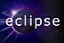

Eclipse RSS Reader
Rich Site Summary (RSS) is a lightweight XML format designed for sharing news headlines and other itemizable Web content. It has a broad range of applications, such as on-line news publishing (Yahoo! News), web logs (Slashdot.org), professional bulletins (IBM developerWorks), and project updates (SourceForge.net). Several versions of RSS are currently in widespread use. This fact has a potentially negative impact on applications designed to work with RSS. Often, an application capable of understanding one format cannot handle another, which reduces its usefulness and forces the user to rely on other solutions.
The Eclipse RSS Reader allows the user to create RSS channels, connected on-line RSS feeds, and view the items they contain in several Eclipse views. Each channel can be updated from its source at regular intervals. The channel items can be browsed using configured link browsers. Because the Eclipse RSS Reader is built on the Eclipse platform, it has a number of advantages over other solutions:
- Eclipse's extension points together with its plug-in based architecture support addition of new RSS format translators without changing the core application.
- The Eclipse workbench provides interaction consistency for users of existing Eclipse-based tools (I, for one, like to keep up-to-date on world events while working on my projects).
- Eclipse's resource and user interface models provide opportunities for integration with other Eclipse-based tools, thus extending the scope of this solution to other applications.
This project is one of the winners in the Open category of the International Challenge for Eclipse (ICE) Contest. Please visit the Eclipse ECESIS Project page for more information.
Project hosting for the Eclipse RSS Reader is provided by SourceForge. Your comments, questions or suggestions are most welcome.